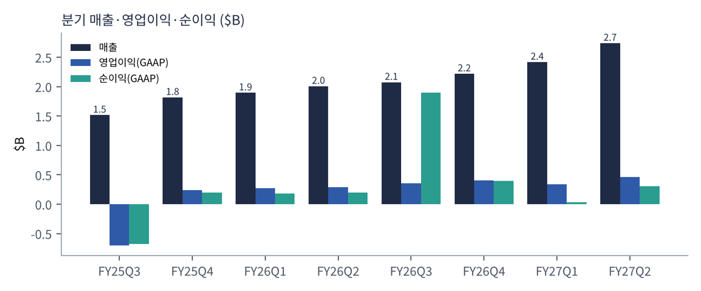
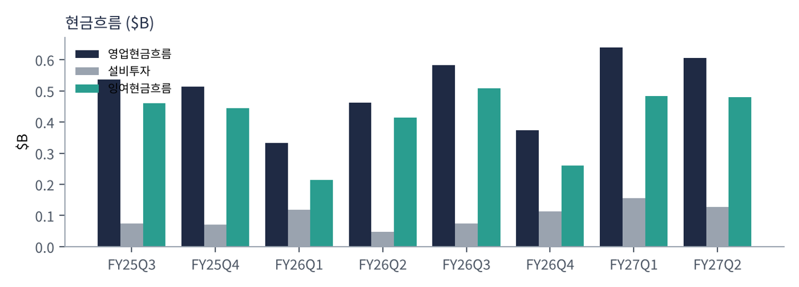
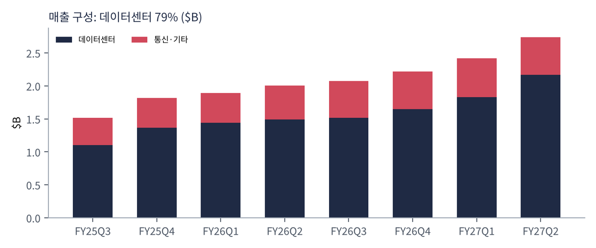
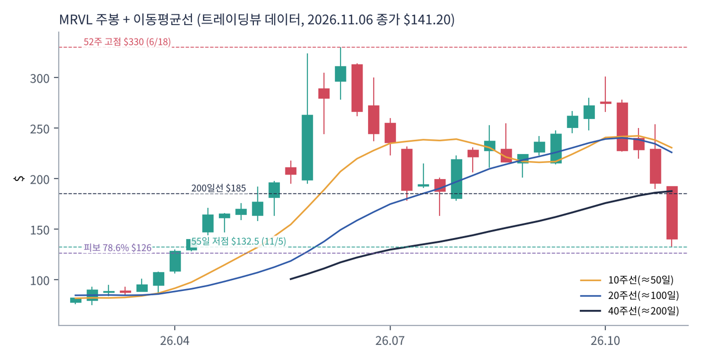
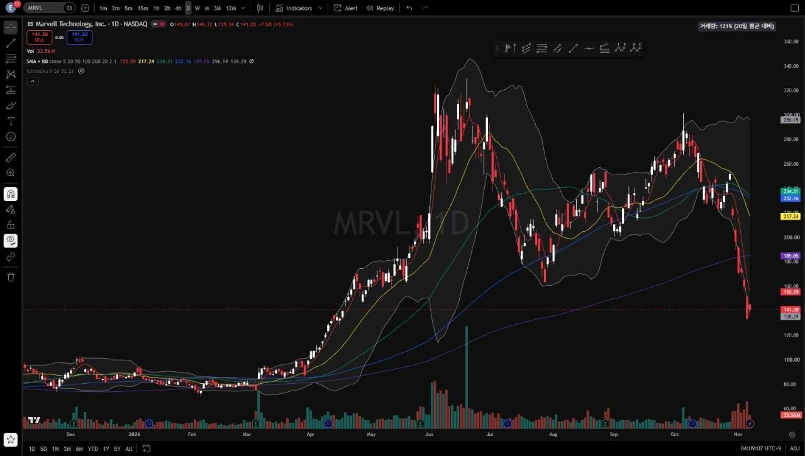
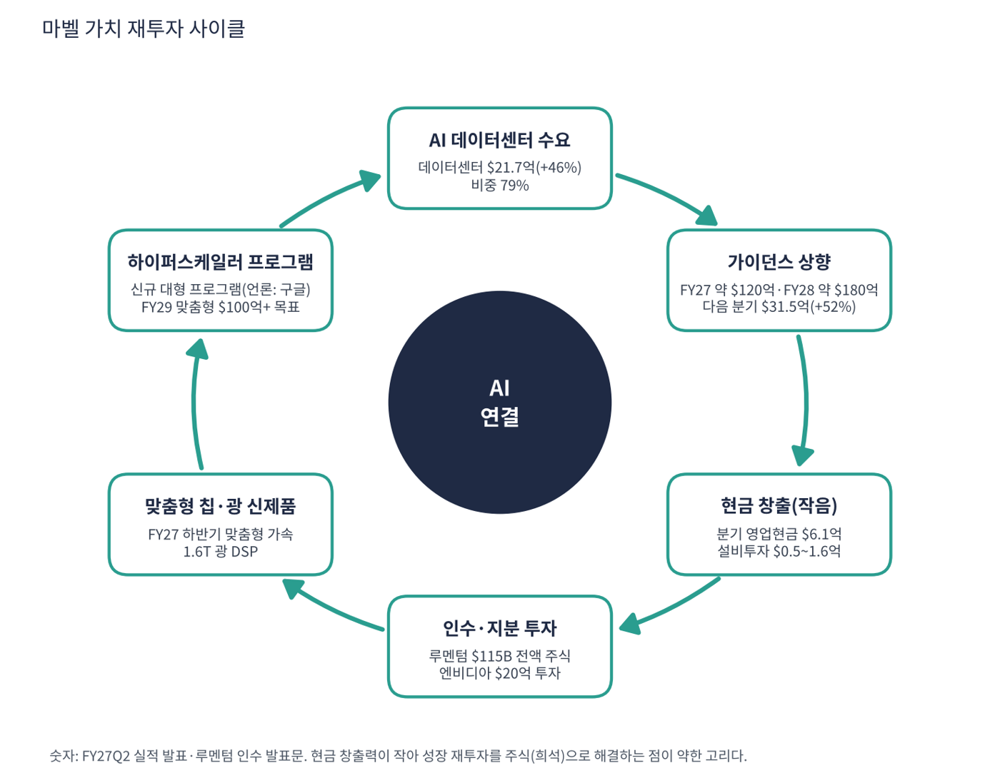

마벨은 데이터가 오가는 길을 만드는 반도체 회사다. 데이터센터 안에서 서버와 서버, 칩과 칩을 잇는 광통신용 DSP·스위치 칩, 그리고 구글·아마존·마이크로소프트 같은 고객이 원하는 대로 설계해 주는 맞춤형 AI 칩(XPU)이 핵심이다. 설계만 하고 생산은 위탁하는 팹리스 회사다.
| 항목 | 내용 |
|---|---|
| 종목 | Marvell Technology, Inc. (MRVL) · NASDAQ · 반도체 · 1995년 설립 · 본사 캘리포니아주 산타클라라 |
| 시가총액 | 약 $1,238억 · 희석 주식 약 9.2억 주 (트레이딩뷰, 11/6 종가 $141.20) |
| 최근 분기(FY27Q2) | 매출 $2.74B(+37%), 데이터센터 $2.17B(+46%), GAAP 영업이익 $460M, 비GAAP EPS $0.94 / GAAP EPS $0.33 |
| 다음 분기 가이던스 | FY27Q3 매출 $3.15B ±5%(+52%), 비GAAP 매출총이익률 57.5~58.5%, 비GAAP EPS $1.10 ±$0.05 |
| 최근 사건 | 2026.3 엔비디아에 전환우선주 발행($20억 투자) · 2026.11.2 루멘텀 인수 발표(기업가치 $115B, 전액 주식) |
| 다음 실적 | FY27Q3: 2026년 12월 초 발표 예정 (회계연도는 1월 말 종료) |
| 직책 | 인물 | 역할·특징 |
|---|---|---|
| 회장 겸 CEO | 맷 머피 | 2016년 취임. 자동차·소비자 사업을 정리하고 데이터센터에 집중. 루멘텀 인수 발표에서 "전기·광을 통합 설계하는 연결의 카테고리 리더"를 제시 |
| CFO | 댄 던 | 비GAAP 영업이익률 38~40% 목표, 영업비용은 매출 성장의 절반 속도로 늘리는 이익 레버리지를 설명 |
경영 스타일: '선택과 집중, 그리고 큰 베팅'. 차량용 이더넷을 인피니언에 팔고 제품 라인을 정리해 데이터센터 비중을 79%까지 끌어올렸다. 그다음 $115B짜리 루멘텀 인수라는 가장 큰 베팅을 걸었다. 회사가 현금이 많지 않아 전액 주식으로 거래해 기존 주주 지분이 67%로 줄어든다.
하이퍼스케일러가 직접 쓰는 AI 가속기(XPU)와 주변 칩을 설계·양산하고, 광트랜시버 안의 PAM4 DSP(800G·1.6T), 랙 안 구리 케이블용 AEC 칩, 이더넷 스위치를 공급한다.
엔비디아가 AI 팩토리 전체를 노린다면 마벨은 그 안의 연결 전체를 노린다. 루멘텀(레이저·광트랜시버·광회로 스위치)을 합쳐 전기와 광을 처음부터 함께 설계하고, 합병 후 목표 시장을 $550B로 본다.
| 분기 (종료월) | 매출 | YoY | GAAP 매출총이익률 | GAAP 영업이익 | GAAP 순이익 | 데이터센터 | DC YoY | 영업현금 | 특이 사항 |
|---|---|---|---|---|---|---|---|---|---|
| FY25Q3 (24.10) | $1.52B | +7% | 23.0% | -703M | -676M | $1.10B | +98% | 536M | 제품 정리 손상 등 일회성 비용 |
| FY25Q4 (25.1) | $1.82B | +27% | 50.5% | 235M | 200M | $1.37B | +78% | 514M | |
| FY26Q1 (25.4) | $1.90B | +63% | 50.3% | 271M | 178M | $1.44B | +76% | 333M | |
| FY26Q2 (25.7) | $2.01B | +58% | 50.4% | 290M | 195M | $1.49B | +69% | 462M | |
| FY26Q3 (25.10) | $2.07B | +37% | 51.6% | 358M | 1,901M | $1.52B | +38% | 582M | 차량용 이더넷 매각 이익 |
| FY26Q4 (26.1) | $2.22B | +22% | 51.7% | 404M | 396M | $1.65B | +21% | 374M | |
| FY27Q1 (26.4) | $2.42B | +28% | 52.1% | 339M | 35M | $1.83B | +27% | 639M | 일회성 비용으로 순이익 급감 |
| FY27Q2 (26.7) | $2.74B | +37% | 53.1% | 460M | 308M | $2.17B | +46% | 606M | 비GAAP EPS $0.94 |


흐름 요약: 성장 곡선이 'U자'를 그렸다. 데이터센터 성장률은 FY25Q3 +98%에서 FY26Q4 +21%까지 1년 내내 둔화했다가 +27% → +46%로 다시 빨라졌다. 기존 맞춤형 칩 세대 물량이 정점을 지나고 다음 세대가 아직 매출로 잡히지 않은 공백기로 해석된다. GAAP 숫자는 일회성 항목에 크게 흔들린다. FY25Q3 -$676M은 제품 정리 손상, FY26Q3 $1.9B는 차량용 이더넷 매각 이익이다. 인수 무형자산 상각과 주식보상 때문에 GAAP 순이익($308M)과 비GAAP 순이익($866M) 차이도 크다.
| 매출원 | 돈을 버는 방식 | FY27Q2 매출 | 성장 |
|---|---|---|---|
| 데이터센터 — 맞춤형 칩 | 하이퍼스케일러가 직접 쓰는 AI 가속기(XPU)와 주변 칩(메모리·스토리지·네트워크 컨트롤러)을 대신 설계·양산. 설계 용역(NRE) + 양산 매출 | $2.17B | +46% |
| 데이터센터 — 연결 | 800G·1.6T 광트랜시버 안의 PAM4 DSP, 랙 안 구리 케이블용 AEC 칩, 데이터센터 간 연결(DCI) | (데이터센터에 포함) | – |
| 데이터센터 — 스위치·스토리지 | 테라링크스 이더넷 스위치, SSD·HDD 컨트롤러 | (데이터센터에 포함) | – |
| 통신·기타 | 기업 네트워크, 통신사 장비, 소비자, 산업용 | $0.57B | +10% |

FY27부터 매출을 데이터센터와 통신·기타 두 개로만 공개한다(데이터센터 79%). 세 하위 사업의 비중은 공개되지 않는다. 핵심 변수는 맞춤형 칩 프로그램 몇 개가 언제 양산에 들어가느냐다. 연결 칩은 AI 투자에 비례해 꾸준히 늘지만 맞춤형 칩은 고객 한 곳의 세대 교체에 따라 분기 매출이 크게 출렁인다. 맞춤형 칩은 마진이 낮아 3분기 매출총이익률 가이던스가 2분기(58.9%)보다 낮아졌다.
마벨은 스스로를 "데이터 인프라 반도체 솔루션의 리더"라고 소개한다. 루멘텀 인수 발표문에서 머피 CEO가 밝힌 목표는 더 분명하다. AI 인프라에서 전기와 광을 하나로 설계(co-design)하는 '연결의 카테고리 리더'가 되는 것이다.
| 전환의 논리 | 발표문의 설명 |
|---|---|
| 구리의 한계 | 대역폭 요구가 급증하고 구리 연결의 물리적 한계가 드러나며 광 기술로의 전환이 빨라진다 |
| 스케일업·스케일인 | 랙 안·칩 안까지 광으로 연결되면 부품을 따로 사서 조립하는 방식으로는 안 되고 전기·광을 처음부터 함께 설계해야 한다 |
| 각자의 강점 | 마벨: 전기·광 인터커넥트, 스위칭, 맞춤형 XPU / 루멘텀: 고성능 레이저, 광트랜시버, 광회로 스위치 |
| 목표 | 합병 회사 목표 시장 $550B, 연간 비용 시너지 $10억 이상, 인수 1년 차부터 비GAAP EPS 증가 |


위: 트레이딩뷰 주봉 데이터로 재구성(10·20·40주선). 아래: 트레이딩뷰 공개 차트 일봉 캡처(작도 숨김, 이동평균선·볼린저밴드만 표시).
| 이동평균 | 값 | 종가 대비 | 해석 |
|---|---|---|---|
| 5일선 | $155.59 | -9.2% | 11/2 인수 발표 후 급락 반영 |
| 20일선 | $217.24 | -35.0% | 주가와의 괴리가 극단적, 과매도 |
| 50일선 | $234.31 | -39.7% | 10월까지 지지, 이제 먼 저항 |
| 100일선 | $232.16 | -39.2% | 50일선과 겹침, $217~234 매물대 |
| 200일선 | $185.05 | -23.7% | 11월 첫 주 이탈, 아직 우상향 |
배열은 50일 > 100일 > 20일 > 200일 > 주가다. 하락은 세 단계였다. ① 10월 둘째 주 $275 → $228(반도체 차익실현), ② 10/28 인수 협상 보도로 시간외 -10%, ③ 11/2 인수 확정 후 한 주 $192 → $141(-28%). 거래량이 20일 평균의 121%로 단순 조정이 아니라 투매에 가까웠다.
| 규칙 | 기준 | 현재 값 | 신호 |
|---|---|---|---|
| 장기 추세 필터 | 종가 vs 200일선 | $141.20 < $185.05 | 매도 |
| 중장기 교차 | 50일선 vs 200일선 | $234.31 > $185.05 | 매수 |
| 단기 교차 | 20일선 vs 50일선 | $217.24 < $234.31 | 매도 |
| 돈키언 채널 | 55일 고가 $301.27 / 저가 $132.54 | 중간값 $216.90 아래 | 매도 |
| 1개월 모멘텀 | 21거래일 수익률 | -48.6% (기준 $274.66) | 매도 |
| 3개월 모멘텀 | 63거래일 수익률 | -32.3% (기준 $208.56) | 매도 |
| 6개월 모멘텀 | 126거래일 수익률 | -17.0% (기준 $170.13) | 매도 |
| 12개월 모멘텀 | 252거래일 수익률 | +52.0% (기준 $92.90) | 매수 |
| 종합 (8개 평균) | -0.50 | 매도 우위 |
해석: 1개월 수익률 -49%는 추세추종 관점에서 극단적이다. 기계적 매도가 대부분 끝났을 가능성이 있으나, 남은 두 매수 신호(50/200일 교차, 12개월 모멘텀)도 시간이 지나면 약해진다. 14일 ATR $18.71 (13.3%)로 주가의 13%라 손절 폭을 넓게 잡고 비중은 작게 해야 한다.
| 가격 | 무엇이 바뀌나 | 의미 |
|---|---|---|
| $170 | 6개월 모멘텀 기준($170.1) | 매도 신호 하나 감소 (-0.50 → -0.25) |
| $185 | 200일선 | 장기 추세 필터 매수 전환, 추세 복귀 최소 조건 |
| $209 | 3개월 모멘텀 기준 | 종합 점수 플러스 전환 구간 |
| $132.5 이탈 | 55일 신저가 경신 | 돈키언 매도 유지, 추가 하락 신호 |
| 구분 | 가격대 | 근거 |
|---|---|---|
| 저항 2 | $217 ~ 234 | 20·50·100일선 밀집 |
| 저항 1 | $185 ~ 192 | 200일선, 11/2 주 시가 $192(갭 상단) |
| 지지 1 | $126 ~ 133 | 11/5 저가 $132.5 + 2월 저점→6월 고점 피보나치 78.6% $126.1 |
| 지지 2 | $100 ~ 110 | 4월 돌파 구간 |
'실적 기대'와 '인수 희석'의 줄다리기다. 12월 초 FY27Q3이 가이던스($3.15B, 데이터센터 +75% 보도)를 확인해 주면 반등 명분이 생긴다. 그 전에는 지지 구간 소액 분할 매수 외에는 관망이 낫다. $133~141에서 계획 비중의 30%, $126~130에서 20%를 진입하고(평균 $134·손절 $118 기준 손익비 1:2.2~1:3.2), 실적 후 $185 종가 회복 시 나머지 50%를 추가한다. 1차 $170에서 40%, 2차 $185~192에서 40% 익절한다. $126 종가 이탈 시 비중 축소, $118 종가 이탈이면 손절이다.
| 악재 요인 | 내용 | 강도 |
|---|---|---|
| 인수 실행 | $115B 규모, 12~18개월 마감, 양사 주주 승인·각국 규제 승인 필요. 통합 기간 경영진 집중력 분산 | 높음 |
| 희석 | 기존 주주 지분 67%로 축소. 교환비율 4.5주 고정이라 마벨 주가가 떨어지면 거래 가치도 같이 하락 | 높음 |
| 고객 집중 | 맞춤형 칩 매출이 소수 하이퍼스케일러에 집중. 한 곳의 세대 전환 지연이 분기 실적을 좌우 | 중간~높음 |
| 브로드컴 | 맞춤형 AI 칩 1위(구글 TPU 주력 파트너). 같은 고객을 두고 경쟁 | 중간 |
| 마진 희석 | 맞춤형 칩 비중 확대로 매출총이익률 하락 압력 | 중간 |
| 변동성 | 14일 ATR 13%, 반도체 업종 급락 때 낙폭이 가장 큼 | 참고 |
| 티커 | 회사 | 시가총액 | PER(TTM) | PEG | P/S | EPS 성장(YoY) |
|---|---|---|---|---|---|---|
| MRVL | 마벨 | $124B | 46.5배 | – | 12.57배 | – |
| AVGO | 브로드컴 | $1,402B | 37.5배 | 0.34 | 14.81배 | +100% |
| NVDA | 엔비디아 | $4,498B | 23.6배 | 0.20 | 15.63배 | +125% |
| AMD | AMD | $736B | 97.6배 | 0.68 | 14.50배 | +127% |
| TSM | TSMC | $1,630B | 24.2배 | 0.39 | 12.03배 | +59% |
| QCOM | 퀄컴 | $177B | 13.0배 | 0.08 | 3.97배 | +160% |
마벨의 EPS 성장률은 직전 연도 기저로 산출되지 않는다. 마벨 TTM PER에는 매각 이익이 포함돼 있다.
비교 결론: 마벨의 PER 46.5배는 브로드컴(37.5배)·엔비디아(23.6배)보다 높지만 AMD(97.6배)보다는 낮다. 다만 마벨의 TTM 순이익에는 $1.9B 일회성 이익이 섞여 있어 직접 비교가 어렵다. 비GAAP 선행 기준(약 32배)으로 보면 AI 반도체 동종 평균에 가까워진다.
마벨은 적자 기업이 아니다. 영업이익은 흑자이고 분기 영업현금이 $0.3~0.6B다. 다만 현금 창출력이 엔비디아(분기 FCF $213억)와 비교할 수 없이 작아 인수와 성장 투자를 현금으로 못 한다는 점을 점검했다.
| 지표 | 값 | 계산·출처 | 해석 |
|---|---|---|---|
| 최근 4분기 FCF | +$1.7B | 트레이딩뷰 TTM | 팹이 없어 설비투자는 분기 $0.05~0.16B로 작음 |
| 분기 영업현금 | $0.6B | FY27Q2 $606M, FY27Q1 $639M | 분기 변동폭이 큼($333M~$639M) |
| 현금·단기투자 / 총 부채 | $3.9B / $5.5B | 트레이딩뷰 | 순부채 약 $1.6B. 엔비디아 $20억 전환우선주는 별도 |
| EBITDA (TTM) | $2.8B | 트레이딩뷰 | 순부채/EBITDA 약 0.6배 |
| 루멘텀 인수 대금 | $115B(기업가치) | 마벨 주식 4.5주 교환 | 현금이 아니라 주식으로 지불 → 지분 33% 희석 |
| 가정 | 연간 FCF | 의미 |
|---|---|---|
| 최근 4분기 FCF 유지 | 약 $1.7B | 현금 $3.9B가 연 FCF의 2.3배 |
| FCF 50% 감소 (가정) | 약 $0.85B | 부채 $5.5B 이자와 만기 대응에는 현금 보유분이 필요 |
FCF 50% 감소는 내가 둔 스트레스 가정이다. 회사 전망이 아니다.
| 기준 | 매출 | P/S | 비고 |
|---|---|---|---|
| 트레이딩뷰 표시값(11/6 환산) | – | 12.6배 | 산출 기준 차이 |
| 최근 4분기(TTM) | $9.45B | 13.1배 | 시총 $1,238억 ÷ $9.45B |
| FY27 가이던스(약 $120억) | $12B | 10.3배 | 보도 기준 가이던스 |
| FY28 가이던스(약 $180억) | $18B | 6.9배 | 보도 기준, 루멘텀 제외 |
해석: 최근 4분기 매출 기준 13.1배는 AI 반도체 동종(엔비디아 14.8, 브로드컴 14.8, AMD 14.5)과 비슷하지만, 6월 고점 대비 -57% 하락 후의 값이다. FY28 가이던스 기준 6.9배는 1년 사이 가장 낮다. 가이던스가 맞아야 성립하는 숫자다.
| 지표 | 값 | 판정 |
|---|---|---|
| EBITDA (트레이딩뷰, TTM) | $28억 | 흑자 |
| GAAP 영업이익 (TTM) | $1,561M | FY26Q3~FY27Q2 합계 |
| EBITDA 마진 | 약 30% | $2.8B ÷ $9.45B |
| 비GAAP 영업이익률 목표 | 38~40% | FY27Q4 달성, FY28 상단 (콜 보도) |
| 순부채 / EBITDA | 약 0.6배 | 부담 낮음 |
EBITDA가 영업이익($15.6억)보다 크게 높은 것은 인수 무형자산 상각이 크기 때문이다. GAAP 대신 비GAAP 영업이익률로 수익력을 봐야 한다.
| 방식 | PER | EPS 성장률 | PEG | 판정 |
|---|---|---|---|---|
| 트레이딩뷰 (TTM, 11/6 환산) | 46.5배 | 산출 불가(기저 효과) | – | 산출 불가 |
| GAAP TTM EPS ($3.04) 기준 | 46.5배 | $1.9B 매각 이익이 TTM에 포함 | 의미 없음 | 해석 불가 |
| 비GAAP 선행 (FY27Q3 가이던스 $1.10 × 4, 추정) | 약 32배 ($141.20 ÷ $4.40) | FY28 매출 +50% 가정 시 EPS +50% | 약 0.64 | 투자 적격 |
| 보수적 (EPS 성장 30% 가정) | 약 32배 | +30% | 1.07 | 기준 초과 |
판정: 계산 가능한 방식이 모두 가정에 기댄다. GAAP TTM PER 46.5배에는 차량용 이더넷 매각 이익($1.9B)이 들어 있어 쓸 수 없고 트레이딩뷰 PEG도 산출되지 않는다. 비GAAP 선행 PER 약 32배를 매출 성장률(+45~50%)에 맞춘 EPS 성장률로 나누면 PEG 약 0.64로 '투자 적격'(1.0 이하)이지만 '적극 매수'(0.5 이하)는 아니다. 성장이 30%에 그치면 1.07로 1.0을 넘는다. EPS 성장률 가정은 내 추정이며, 가이던스(보도 기준)가 달성되어야 한다. 루멘텀 인수로 지분이 33% 늘면 주당 이익이 희석되어 이 값이 달라진다.

마벨 사이클의 엔진은 하이퍼스케일러의 AI 자본지출이다. 그러나 번 돈(분기 영업현금 $0.6B)이 작아 재투자의 연료를 현금이 아니라 주식(인수 대금)과 외부 투자(엔비디아)로 조달한다. 이것이 고리의 약한 부분이다.
| 고리 | 현재 숫자 | 고리 강도 | 약해지는 신호 |
|---|---|---|---|
| ① AI 데이터센터 수요 | 데이터센터 $2.17B(+46%), 다음 분기 +52% 가이던스 | 강함 | 고객 한 곳의 세대 전환 지연 |
| ② 가이던스 상향 | FY28 $16.5B → 약 $18B (보도 기준) | 강함 | 프로그램 양산 일정 지연 |
| ③ 현금 창출 | 분기 영업현금 $0.3~0.6B, 최근 4분기 FCF $1.7B | 작음 | 현금으로 인수·투자를 못 해 주식 의존 |
| ④ 인수·지분 투자 | 루멘텀 $115B 전액 주식, 엔비디아 $20억 | 과감 | 주가 하락 시 거래 가치 하락, 주주 반대 |
| ⑤ 신제품 | 맞춤형 가속 FY27 하반기, 1.6T 광 DSP 램프업 | 진행 중 | 맞춤형 칩 비중 확대로 매출총이익률 하락 |
| ⑥ 고객 프로그램 | 신규 대형 프로그램(언론: 구글), 아마존·마이크로소프트 | 집중 | 브로드컴과 같은 고객을 두고 경쟁 |
구조: ①·②는 강하고 ④가 사이클의 크기를 키우는 동시에 가장 큰 위험이다. 12월 초 FY27Q3 실적이 ① 가이던스(+52%)를 확인하는지, 그리고 루멘텀 주주 승인이 주가에 어떻게 작용하는지가 다음 확인점이다.